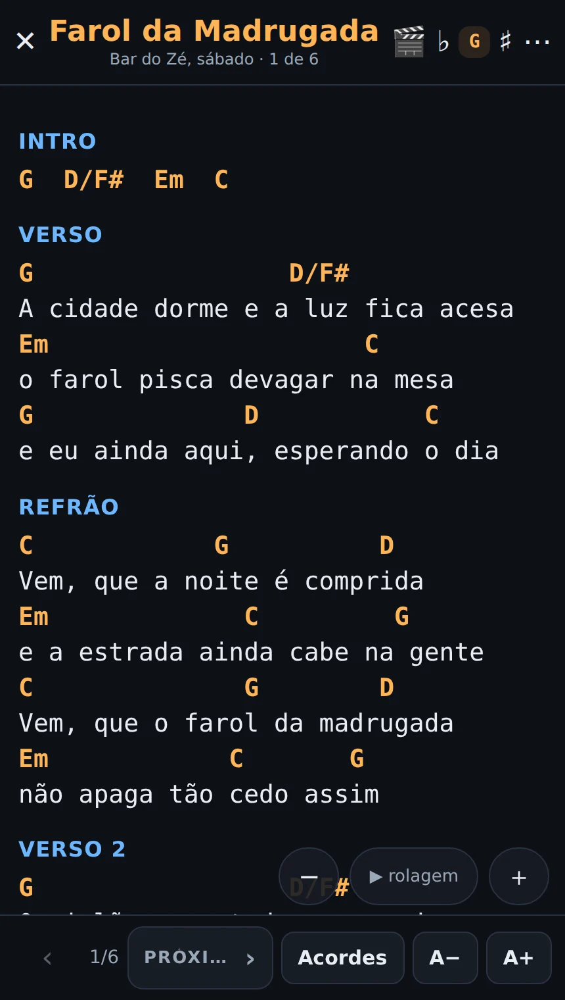
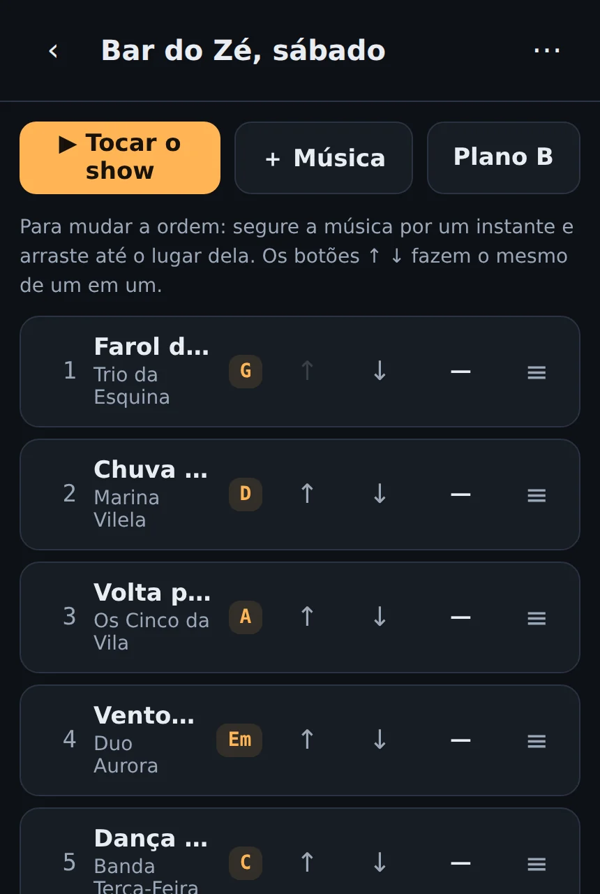
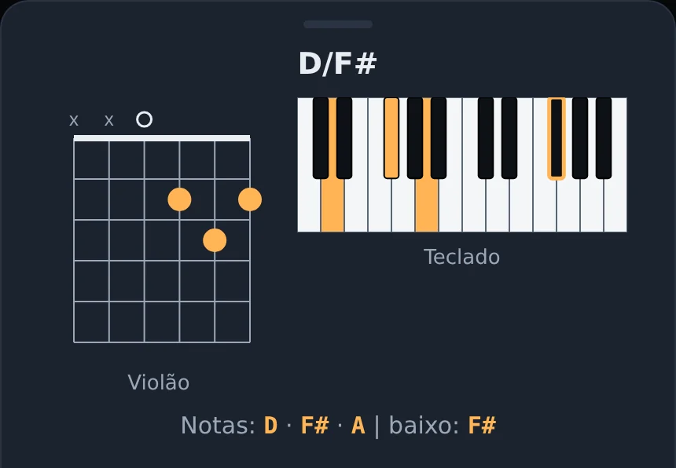
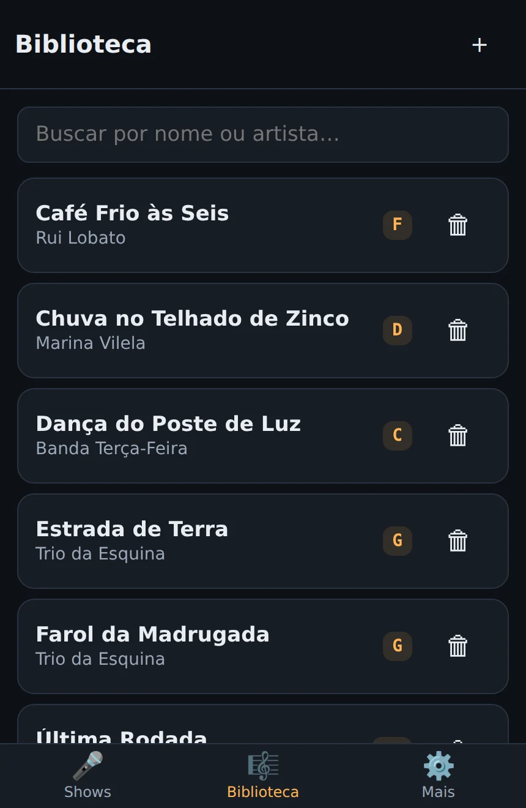
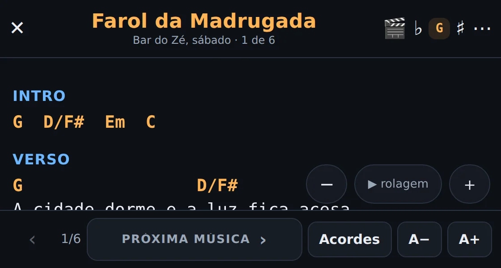
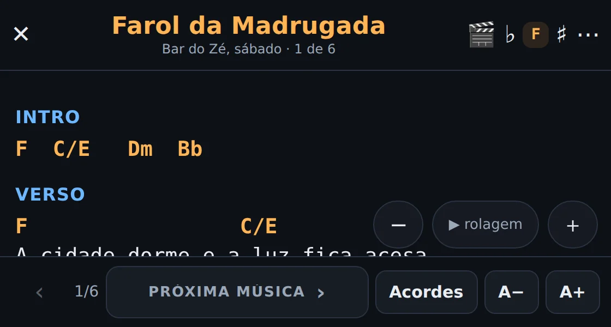

Suas cifras prontas na hora do show.
Sem papel amassado, sem print que apaga a tela, sem depender do wi-fi da casa.

O modo palco: letra grande, acorde em cima da sílaba certa, rolagem descendo sozinha e a tela que não apaga.
Você já passou por isso.
- A tela apaga no meio da música
Print no celular não sabe que você está tocando. E ninguém quer desbloquear o aparelho com a mão direita no braço do violão.
- A casa não tem sinal
O site da cifra abre no ensaio e trava na hora do show, justamente quando você não tem como resolver.
- A cantora pede meio tom abaixo
E você transpõe de cabeça, no palco, com a banda esperando e todo mundo olhando.
- A ordem do show muda
Você procura a próxima música com uma mão só, rolando uma lista de arquivos com nome de arquivo.
Feito para ser lido de pé, a um metro de distância.
O show inteiro na ordem certa
Monte a setlist arrastando as músicas. No palco, um toque passa para a próxima, e o pedal de virar página faz o mesmo com as duas mãos ocupadas.
Mudou a ordem em cima da hora? Arrasta e pronto.

O desenho do acorde, na mesma tela
Bateu dúvida num acorde estranho? Toque nele. Aparece o desenho no violão e no teclado, com as notas e o baixo escritos por extenso.
Sem sair da música, sem abrir outro app, sem perder o compasso.

A biblioteca com o tom de cada música
Tudo que você já tocou fica junto, com o artista e o tom à vista. A busca acha pelo nome, pelo artista ou por um pedaço da letra.
Cada música guarda o seu tom, a sua velocidade de rolagem e as suas observações.

Meio tom abaixo, sem apagar nada.
Dois toques e a cifra inteira muda de tom na tela. A original continua guardada do jeito que você colou.

Tom de G

Tom de F, com a banda esperando
As coisas pequenas que salvam o show.
Violão e teclado
Todo acorde tem os dois desenhos. Você troca de instrumento sem trocar de app.
Pedal e teclado
Barra de espaço e pedal de página viram o passar de música.
Observações da música
"Entra sem intro", "repete o refrão 2x". Fica junto da cifra, não no papel.
Backup em arquivo
Exporta a biblioteca inteira num arquivo. É sua, sempre, saia ou fique.
Vira ícone no iPad
Instala na tela de início como qualquer app. Não precisa de loja.
Dois aparelhos juntos
iPad no palco, celular no bolso, a mesma biblioteca nos dois.
Três passos e o próximo ensaio já é aqui.
- Crie sua conta grátisSó o e-mail. Chega um código de 6 números, sem senha para inventar.
- Coloque suas músicasCole a cifra de onde você já usa. O app separa acorde de letra sozinho e adivinha o tom.
- Instale na tela de inícioNo iPad e no iPhone vira ícone, igual a qualquer app.
Comece de graça. Assine quando o repertório crescer.
Grátis
- 8 músicas na biblioteca
- 1 show montado
- Modo palco completo
- Tom, acordes e rolagem
- Funciona sem internet
Assinatura
- Biblioteca sem limite
- Quantos shows você quiser
- iPad e celular sincronizados
- Sem anúncio nenhum
- Cancela quando quiser
Cancelando, nada é apagado. Suas músicas continuam no aparelho, e você exporta tudo quando quiser.
Eu sou o Eder. Toco teclado e violão.
Fiz este app porque me cansei de subir no palco com folha impressa e de descobrir, no meio do show, que o celular tinha bloqueado a tela.
Cada coisa aqui dentro resolveu um problema que eu tive tocando, não uma ideia que eu tive na frente do computador. A rolagem automática nasceu num sábado em que eu estava com as duas mãos no teclado. O desenho do acorde na mesma tela nasceu de um acorde que eu não conhecia, dois compassos antes de entrar.
Se faltar alguma coisa para o seu show, me escreve. Eu leio.
Eder OrtegaComece pelo próximo ensaio.
Oito músicas de graça já dão um repertório de canto de bar.